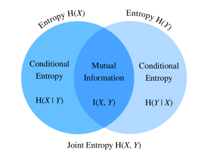

import numpy as npIntroduction
Information flows around us. It’s everywhere. No matter what we have, either it will be some well-known play or painting or just a bunch of numbers or video streams. For computers, all of them are represented by only two digits 0 and 1, and they carry some information. “Information theory studies the transmission, processing, extraction, and utilization of information.”wikipedia In simple words, with information theory, given different kinds of signals, we try to measure how much information is presented in each of those signals. The theory itself originates from the original work of Claude Shannon named A Mathematical Theory of Communication
It will be helpful to see how machine learning and information theory are related. According to “Dive Into Deep Learning” hence d2l considers this relationship to be
Machine learning aims to extract interesting signals from data and make critical predictions. On the other hand, information theory studies encoding, decoding, transmitting, and manipulating information. As a result, information theory provides a fundamental language for discussing the information processing in machine learned systems.source
Information theory is tightly connected to mathematics and statistics. We will see later on how, but before that, it’s worth to say where is used the concepts of information theory in statistics and mathematics. We all know or have heard about random variables that are drawn from some probability distribution. From linear algebra, we also know how to measure the distance between two points, or between two planes. But, how can we measure the distance between two probability distribution? In other words, how similar or dissimilar are these two probability distribution? Information theory gives us the ability to answer this question and quantify the similarity measure between two distributions. Before we continue, let me outline the measurement unit of information theory. Shannon introduced the bit as the unit of information. The series of 0 and 1 encode any data. Accordingly, the sequence of binary digits of length \(n\) contains \(n\) bits of information. That has been said, we can review concepts of information theory.
There are a few main concepts in information theory, and I will go through each of them in a detailed manner. First in line is:
Self-Information
To understand this concept well, I will review two examples—one from statistics and probability and the second from the information theory. Let start with statistics and probability. Imagine we conduct an experiment giving several outcomes with a different probability. For example, rolling the fair dice with uniform probability \(\frac{1}{6}\) of returning numbers from 1 to 6. Now, consider three outcomes, defined as \(A=\{outcome \leq 6\}\) \(B=\{outcome is odd\}\), and \(C=\{outcome=1\}\) over probability space \(\Omega\), which in turn contains all the outcomes. Self-information, sometimes stated as information content or surprisal indicates how much unlikely the event \(A\), or \(B\), or \(C\) is, how much surprised we are by observing either event. Here is the question: How can we convert probability \(p\) of an event into a number of bits? Claude Shannon gave us the formula for that:
\[ I(X) = - \log_2(p) \]
For our three events, \(A\), \(B\), and \(C\) the self-information or surprisal is the following:
\[ I(A) = - \log_2(1) = 0 \]
\[ I(B) = - \log_2(\frac{3}{6}) = 1 \]
\[ I(C) = - \log_2(\frac{1}{6}) = 2.58 \]
From an information theory perspective, if we have a series of binary digits of the length \(n\), then the probability of getting 0 or 1 is \(\frac{1}{2^{n}}\). According to Shannon, self-information is the bits of information we receive from observing the event \(X\). Let \(X\) be the following code: 0101, then its information content is 4 bits according to our formula:
\[ I(X) = I(0101) = - \log_2(\frac{1}{2^{4}}) = 4 \]
def self_information(p):
return -np.log2(p)self_information(1 / 2**4)4.0The main takeaway here is that if a particular event has 100% probability, its self-information is \(-\log_2(1) = 0\), meaning that it does not carry any information, and we have no surprise at all. Whereas, if the probability would be close to zero, or we can effectively say it’s zero, then self-information is \(-\log_2(0) = \infty\). This implies that the rare events have high surprisal or high information content.
We see that information content only measures the information of a single event. To generalize this notion for any discrete and/or continues event, we will get the idea of Entropy.
Entropy
If we have any random variable \(X\), whether it will be a discrete or continuous and \(X\) follows a probability distribution \(P\) with p.d.f if it’s continuous or p.m.f if it’s discrete. Can we calculate the average value of \(X\)? Yes, we can. From statistics, the formula of the average or a.k.a expectation is
\[ \mathbb E(X) = \sum_{i=1}^{k} x_{i} \cdot p_{i} \]
Where \(x_{i}\) is one particular event with its probability \(p_{i}\). The same is in information theory. The Entropy of a random variable \(X\) is the expectation of its self-information, given by:
\[ H(X) = - \sum_{i} p_{i} \log_{2} p_{i} \]
In Python it looks the following:
# np.nansum return the sum of NaNs. Treats them as zeros.
def entropy(p):
out = np.nansum(-p * np.log2(p))
return outentropy(np.array([0.1, 0.5, 0.1, 0.3]))1.6854752972273346Here, we only consider one random variable, \(X\), and its expected surprisal. What if we have two random variables \(X\) and \(Y\)? How can we measure their joint information content? In other words, we are interested what information is included in \(X\) and \(Y\) compared to each separately. Here comes the Joint Entropy
Joint Entropy
To review this concept let me introduce two random variables \(X\) and \(Y\) and they follow the probability distribution denoted by \(p_{X}(x)\) and \(p_Y(y)\), respectively. \((X, Y)\) has joint probability \(p_{X, Y}(x, y)\). The Joint Entropy hence is defined as:
\[ H(X, Y) = - \sum_{x} \sum_{y} p_{X, Y}(x, y) \log_{2} p_{X, Y}(x, y) \]
Here are two important facts. If \(X = Y\) this implies that \(H(X,Y) = H(X) = H(Y)\) and if \(X\) and \(Y\) are independent, then \(H(X, Y) = H(X) + H(Y)\).
def joint_entropy(p_xy):
out = np.nansum(-p_xy * np.log2(p_xy))
return outjoint_entropy(np.array([[0.1, 0.5, 0.8], [0.1, 0.3, 0.02]]))2.0558948969327187As we see, joint entropy indicates the amount of information in the pair of two random variables. What if we are interested to know how much information is contained, say in \(Y\) but not in \(X\)?
Conditional Entropy
The conditional entropy is used to measure the relationship between variables. The following formula gives this measurement:
\[ H(Y \mid X) = - \sum_{x} \sum_{y} p(x, y) \log_{2} p(y \mid x) \]
Let investigate how conditional entropy is related to entropy and joint entropy. Using the above formula, we can conclude that:
\[ H(Y \mid X) = H(X, Y) - H(X) \]
meaning that the information contained in \(Y\) given \(X\) equals information jointly contained in \(X\) and \(Y\) minus the amount of information only contained in \(X\).
def conditional_entropy(p_xy, p_x):
p_y_given_x = p_xy / p_x
out = np.nansum(-p_xy * np.log2(p_y_given_x))
return outconditional_entropy(np.array([[0.1, 0.5], [0.2, 0.3]]), np.array([0.2, 0.8]))0.8635472023399721Knowing conditional entropy means knowing the amount of information contained in \(Y\) but not in \(X\). Now let see how much information is shared between \(X\) and \(Y\).
Mutual Information
To find the mutual information between two random variables \(X\) and \(Y\), let start the process by finding all the information in both \(X\) and \(Y\) together and then subtract the part which is not shared. The information both in \(X\) and \(Y\) is \(H(X, Y)\). Subtracting two conditional entropies gives:
\[ I(X, Y) = H(X, Y) - H(Y \mid X) − H(X \mid Y) \]
This means that we have to subtract the information only contained in \(X\) and \(Y\) to all the information at hand. This relationship is perfectly described by this picture.

The concept of mutual information likewise correlation coefficient, allow us to measure the linear relationship between two random variables as well as the amount of maximum information shared between them.
def mutual_information(p_xy, p_x, p_y):
p = p_xy / (p_x * p_y)
out = np.nansum(p_xy * np.log2(p))
return outmutual_information(np.array([[0.1, 0.5], [0.1, 0.3]]), np.array([0.2, 0.8]), np.array([[0.75, 0.25]]))0.7194602975157967As in the case of the correlation coefficient, mutual information has some notable properties:
- Mutual information is symmetric
- Mutual information is non-negative
- \(I(X, Y) = 0\) iff \(X\) and \(Y\) are independent
We can interpret the mutual information \(I(X, Y)\) as the average amount of surprisal by seeing two outcomes happening together compared to what we would expect if they were independent.
Kullback–Leibler Divergence - Relative Entropy
I asked the question about measuring the distance between two probability distributions. The time has come to answer this question precisely. If we have random variable \(X\) which follows probability distributin \(P\) and has p.d.f or p.m.f \(p(x)\). Imagine we estimated \(P\) with other probability distribution \(Q\), which in turn has p.d.f or p.m.f \(q(x)\). The distance between thse two probability distribution is measured by Kullback–Leibler (KL) Divergence:
\[ D_{\mathrm{KL}}(P\|Q) = E_{x \sim P} \left[ \log \frac{p(x)}{q(x)} \right] \]
The lower value of the \(KL\) divergence, the closer our estimate is to the actual distribution.
- The KL divergence is non-symmetric or equivalently, \(D_{\mathrm{KL}}(P\|Q) \neq D_{\mathrm{KL}}(Q\|P), \text{ if } P \neq Q\)
- The KL divergence is non-negative or equivalently, \(D_{\mathrm{KL}}(P\|Q) \geq 0\)
def kl_divergence(p, q):
kl = p * np.log2(p / q)
out = np.nansum(kl)
return np.abs(out)p = np.random.normal(1, 2, size=1000)
q = np.random.normal(1, 2, size=1000)
kl_divergence(p, q)/var/folders/mz/3thvm62j52l8lpr5sllrt6rh0000gn/T/ipykernel_16290/409365545.py:2: RuntimeWarning: invalid value encountered in log2
kl = p * np.log2(p / q)803.4821687459835Cross Entropy
To understand Cross-Entropy, let me use the example from the KL divergence part. Now, imagine we perform classification tasks, where \(y\) is the true label, and \(\hat{y}\) is estimated label by our model. Cross-Entropy denoted by \(\mathrm{CE}(y, \hat{y})\) is used as a objective function in many classification tasks in deep learning. The formula is the following:
\[ \mathrm{CE} (P, Q) = H(P) + D_{\mathrm{KL}}(P\|Q) \]
The two terms on the right-hand side are self-information and KL divergence. \(P\) is the distribution of the true labels, and \(Q\) is the distribution of the estimated labels. As we are only interested in knowing how far we are from the actual label and \(H(P)\) is also given, the above formula is reduced to minimize only the second term (KL divergence) at the right-hand side. Hence, we have
\[ \mathrm{CE}(\mathbf{y}, \hat{\mathbf{y}}) = - \sum_{i=1}^n \sum_{j=1}^k y_{ij} \log_{2}{p_{\theta} (y_{ij} \mid \mathbf{x}_i)} \]
def cross_entropy(y_hat, y):
ce = -np.log(y_hat[range(len(y_hat)), y])
return ce.mean()labels = np.array([0, 2])
preds = np.array([[0.3, 0.6, 0.1], [0.2, 0.3, 0.5]])
cross_entropy(preds, labels)0.9485599924429406Conclusion
By reviewing these concepts from the information theory, we have some rough sense of how it’s related to the statistics and mathematics and is used in machine learning and deep learning. There is much more to discover, and that’s up to you how far you want to go. Moreover, even interesting is how information theory is related to the coding theory, in gambling and musical composition.